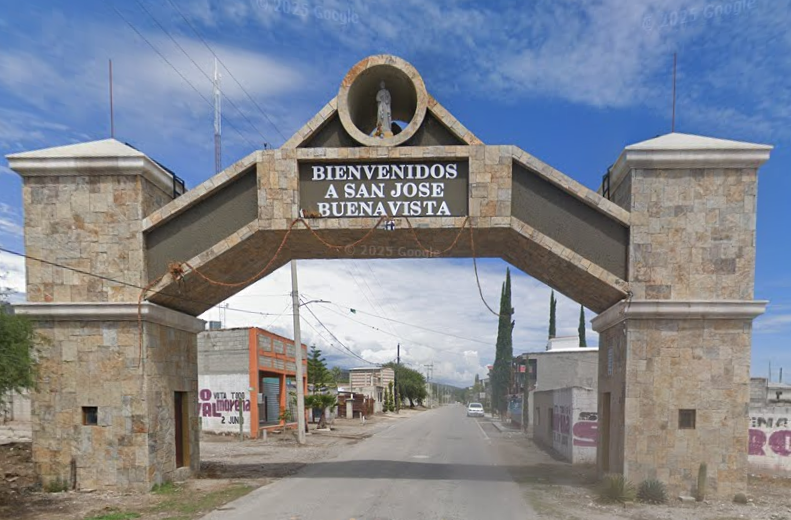
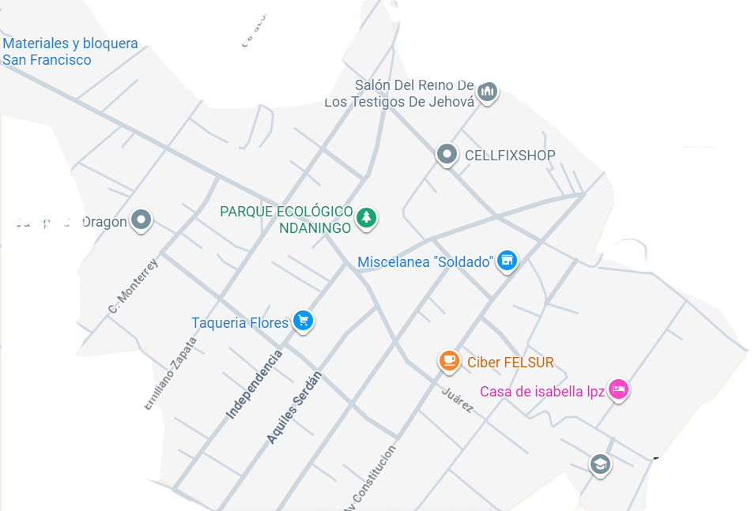
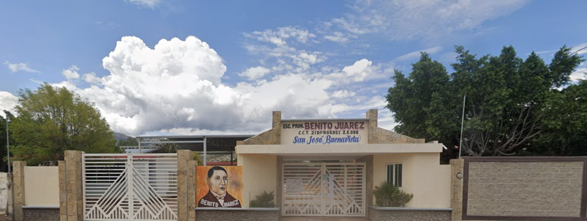
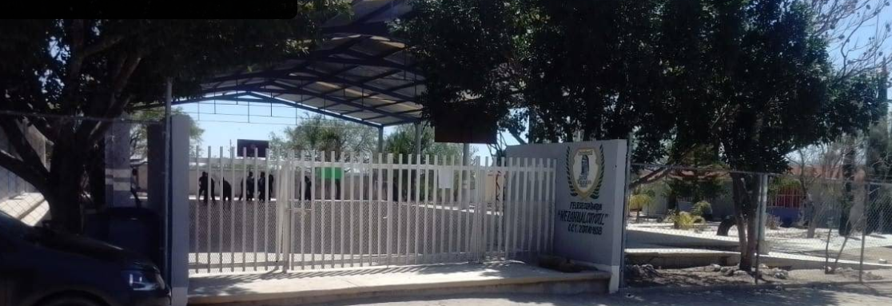

CECyTE
Como llegar a CECyTE
El CECyTE se encuentra ubicado en a ubicación del CECYTE Tlacotepec es la siguiente: Calle de las Flores, Diag. 23 Norte, Tepanacaxco, Sección Sexta, Barrio San Lucas, Tlacotepec de Benito Juárez, Puebla, C.P 75680.
¿Como llegar desde la comunidad de San José Buenavista a CECyTE Plantel Tlacotepec?
Para llegar al CECyTE Plantel Tlacotepec desde la comunidad de San José Buenavista, puedes seguir estos pasos:

- Tomar la combi en la parada principal de San José Buenavista con destino a Tlacotepec, tiempo de viaje máximo 30 minutos.
- Bajarse en la parada mas cercana al CECyTE Plantel Tlacotepec.
- caminar unos 10 minutos hasta llegar al CECyTE Plantel Tlacotepec.
English
How to get to CECyTE
The CECyTE is located at the following location: Calle de las Flores, Diag. 23 Norte, Tepanacaxco, Sección Sexta, Barrio San Lucas, Tlacotepec de Benito Juárez, Puebla, C.P 75680.
How to get from the community of San José Buenavista to CECyTE Plantel Tlacotepec?
Comunidad de San José Buenavista

Dos lugares de mi comunidad
CROQUIS DE LA COMUNIDAD

Escuela primaria Benito Juárez de San José Buenavista

Para llegar a la escuela primaria desde la entrada de la comunidad, deben seguir , las siguientes indicaciones.
- Primero deberan tomar la carretera.
- Despues, caminar derecho hasta llegar al parque ecologico ndaningo(jaguey de la comunidad).
- Luego continuar derecho hasta llegar a la avenida constitucion.
- Luego doblar a la izquierda caminar aproximadamente por uha cuadra.
- "Felicidades, has llegado a tu destino."
Telesecundaria NEZAHUALCOYOTL

Para llegar a la telesecundaria desde la entrada de la comunidad, deben seguir, las siguientes indicaciones.
- Primero, tomar la carretera.
- Después, caminar derecho hasta llegar a la avenida constitucion.
- luego,doblar a la izquierda caminar una cuadra.
- luego,doblar a la derecha caminar dos cuadras.
- luego,doblar a la derecha caminar por una cuadra.
- "Felicidades, has llegado a tu destino."
Two places of my community
Primary school Benito Juárez de San José Buenavista
To get to the school from the entrance of the community, you need to follow these indications.
- First, they must take the road.
- Then, they should drive or walk straight until they reach the ecological park of Ndaningo (the community's jaguey).
- Next, they must continue straight until they arrive at the avenue of the Constitution.
- Then, they should turn left and walk approximately por one block.
- "Congratulations, you have reached your destination."
Telesecundaria NEZAHUALCOYOTL.
To get to the telesecundaria from the entrance of the community, you need to follow these indications.
- First, they must take the road.
- Then, they should drive or walk straight until they reach the avenue of the Constitution.
- Next, they should turn left and walk one block.
- Then, they should turn right and walk two blocks.
- Next, they should turn right and walk for one block.
- "Congratulations, you have reached your destination."